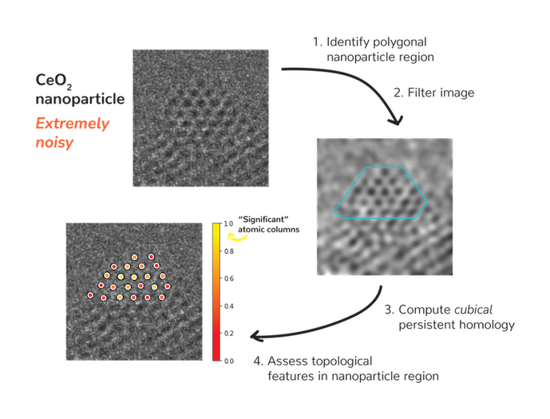

detecTDA
A package for detecting and depicting topological features in images.
Tailor-made to perform hypothesis testing on sequences of noisy images in catalysis.
Installation
If you have pip installed you may simply run
$ pip install detectda
Or, you may clone the git repository and then in said directory run:
$ pip install .
Alternatively, the following is still supported:
$ python3 setup.py install
Summarizing an image series
With a video (and optional polygonal region—see below), extracting statistics related to structure and shape of your noisy image could not be easier. detecTDA leverages TDA (topological data analysis) to derive such quantities, an illustration of which can be seen below.

Such processing is accomplished by fitting the class ImageSeries (or ImageSeriesPlus) to your data. Hypothesis testing whether or not images are generated from a vacuum region within the images is accomplished by fitting and transforming VacuumSeries objects. Note that hypothesis testing is only currently supported for the ImageSeries class.
Usage
detectda is a Python package for detection and hypothesis testing of noisy greyscale images and videos using TDA.
To use the identify_polygon script, run the script in the command line (after having installed the package). Then follow these steps:
1. Enter the name of your `.tif` video.
2. Then right-click to select the boundaries of your polygon.
Double-click to connect the polygon together and press any key
(such as "space" or "enter") to exit and save.
3. Then you will name a .pkl file (you do not need to add the .pkl at the end)
corresponding to your video (such as `test_video.pkl`).
4. Finally, the file `test_video.pkl` (or whatever you have called it) contains
the cropped video (according to the boundaries of your polygon)
as well as the polygonal region of interest.
You will then be able to use this data to process your video with the persistent entropy or ALPS statistic—check out the main example.
Test video
I would like to thank the Crozier Research Group for providing “test_video.tif”. Please see the accompanying paper: “Feature detection and hypothesis testing for extremely noisy nanoparticle images using topological data analysis” (2023) by Thomas, Crozier, Xu, and Matteson for information on how the video was collected.
License
detectda was created by Andrew M. Thomas. It is licensed under the terms of the MIT license.